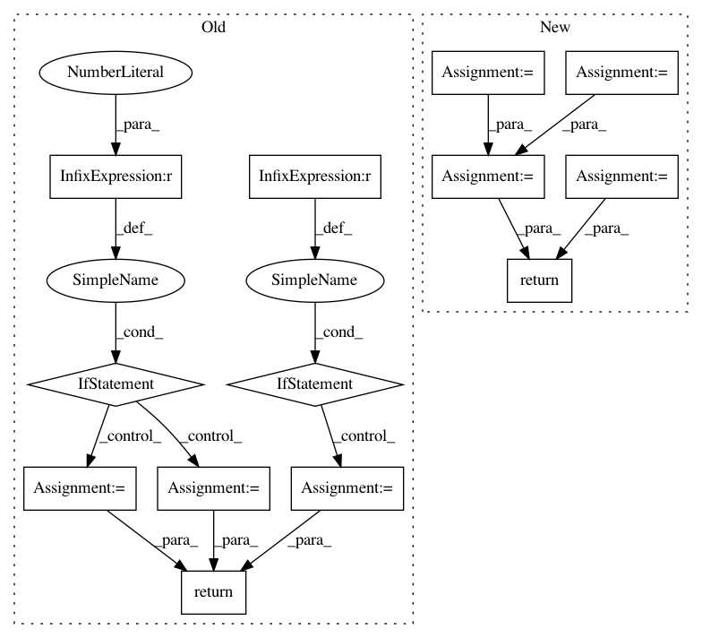

ab1b67c1e958c9a642f57095f3499a893ba0a5b2,snips_nlu/nlu_engine/nlu_engine.py,SnipsNLUEngine,load,#Any#Any#,72
Before Change
"custom_intents")
builtin_intents_directory = os.path.join(directory_path,
"builtin_intents")
if len(os.listdir(custom_intents_directory)) > 0:
custom_intent_parser = RegexIntentParser.load(
custom_intents_directory)
else:
custom_intent_parser = None
if len(os.listdir(builtin_intents_directory)) > 0:
builtin_intent_parser = BuiltinIntentParser(
builtin_intents_directory)
else:
builtin_intent_parser = None
return SnipsNLUEngine(custom_intent_parser, builtin_intent_parser)
After Change
custom_intents_dir = os.path.join(path, "custom_intents")
builtin_intents_dir = os.path.join(path, "builtin_intents")
custom_parsers = [
RegexIntentParser.load(os.path.join(custom_intents_dir, path)) for
path in os.listdir(custom_intents_dir)]
configs_dir = os.path.join(builtin_intents_dir, "configurations")
gazetteers_dir = os.path.join(builtin_intents_dir, "gazetteers")
builtin_parsers = [BuiltinIntentParser(config_path, gazetteers_dir) for
config_path in os.listdir(configs_dir)]
return SnipsNLUEngine(custom_parsers + builtin_parsers)
In pattern: SUPERPATTERN
Frequency: 3
Non-data size: 13
Instances
Project Name: snipsco/snips-nlu
Commit Name: ab1b67c1e958c9a642f57095f3499a893ba0a5b2
Time: 2017-03-24
Author: adrien.ball@snips.net
File Name: snips_nlu/nlu_engine/nlu_engine.py
Class Name: SnipsNLUEngine
Method Name: load
Project Name: onnx/onnx-tensorflow
Commit Name: 2a4e2b1b131d9a1b48d8eba5479b585bf328d3ba
Time: 2017-12-04
Author: tjingrant@gmail.com
File Name: onnx_tf/backend.py
Class Name: TensorflowBackend
Method Name: get_data_format
Project Name: richzhang/PerceptualSimilarity
Commit Name: 7b34113cc3b5529a127bd02667de9de0b5b75df9
Time: 2019-07-26
Author: rich.zhang@eecs.berkeley.edu
File Name: models/networks_basic.py
Class Name: PNet
Method Name: forward